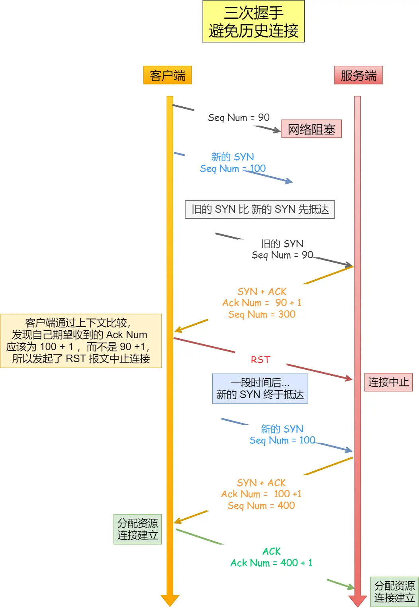
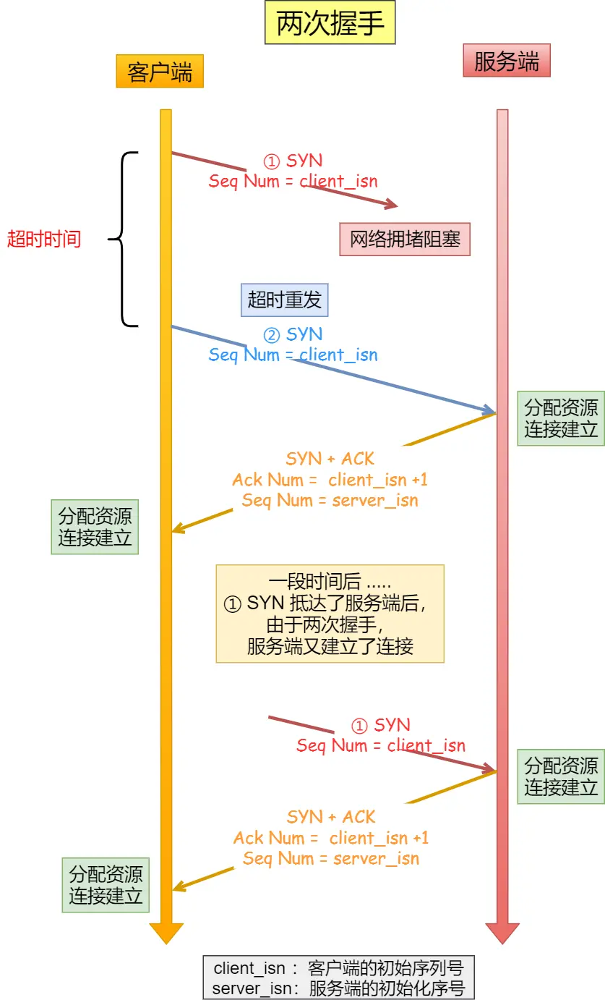
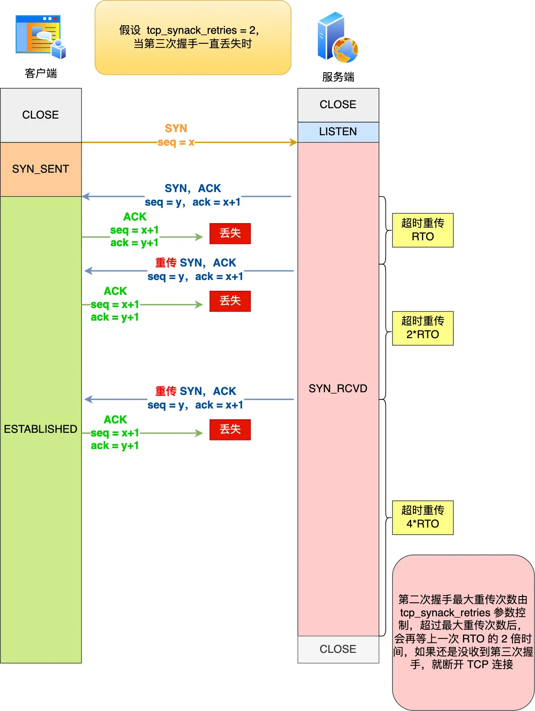
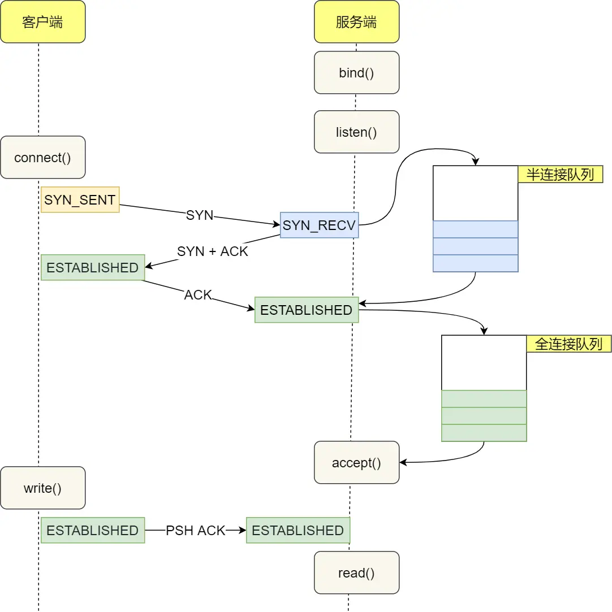

TCP整体概述
一、TCP基本认识
TCP头格式
TCP头的格式，如下图所示：

序列号：在建立连接的时候，计算机会生成的随机数作为其初始值，通过SYN包传给接收端主机，每发送一次数据，就累加一次该数据字节数的大小。用来解决网络包乱序的问题。
确认应答号：指下一次期望收到的数据的序列号，发送端收到这个确认应答以后可以认为这个序号以前的数据都已经被正常接收。用来解决丢包的问题。
控制位：
ACK：为1时，确认应答的字段变成有效，TCP规定除了最初建立连接时的SYN包之外该位必须设置为1。
RST：为1时，表示TCP连接中出现异常必须强制断开连接。
SYN：为1时，表示希望建立理解，并在其序列号的字段进行序列号初始值的设定。
FIN：为1时，表示今后不会再有数据发送，希望断开连接。当通信结束希望断开连接时，通信双方的主机之间就可以相互交换FIN为1的TCP段。
TCP协议属于什么层
IP层是不可靠的，它不保证网络包的交付、不保证网络包的按需交付、也不保证网络包的数据完整性。

如果需要保障网络包的可靠性，那么就需要由上层（传输层）的TCP协议来负责。
因为TCP是一个工作在传输层的可靠数据传输的服务，它能确保接收的网络包是无损坏、无间隔、非冗余和按序的。
TCP定义
TCP是面向连接的、可靠的、基于字节流传输的传输层通信协议。
面向连接：一定是一对一才能连接，不想UDP协议可以找到一个主机同时相多个主机发送消息，也就是一对多是无法做到的。
可靠：无论的网络链路中出现了怎样的链路变化，TCP都可以保证一个报文一定能够到达接收端。
字节流：用户消息通过TCP协议传输时，消息可能会被操作系统分组成多个的TCP报文，如果接收方的程序如果不知道消息的边界，是无法读出一个有序的用户消息的。并且TCP报文是有序的，当前一个TCP报文没有收到时候，及时它收到之后TCP报文，那么也不能扔给应用层去处理，同时对重复的TCP报文会自动丢弃。
TCP连接定义
RFC793定义如下：
Connections: The reliability and flow control mechanismsdescribed above require that TCPs initialize and maintain certain status information for each data stream.The combination of this information, including sockets, sequence numbers, and window sizes, is called a connection.
简单来说就是用于保证可靠性和流量控制的维护的某些状态信息，这些信息的组合，包括Socket、序列号和窗口大小称为连接。
所以我们可以知道，建立一个TCP连接需要客户端与服务端达成上述的三个信息的共识：
Socket：由IP地址和端口号组成。
序列号：用来解决乱序的问题。
窗口大小：用来做流量控制。
确定唯一的TCP连接
TCP四元组可以唯一的确定一个连接，四元组：
源地址。
源端口。
目的地址。
目的端口。

源地址和目的地址的的字段（32位）是在IP；头部中，作用是通过IP协议发送报文给对方主机。
源端口和目的端口的字段（16位）是在TCP头部中，作用是告诉、TCP协议应该把报文发给哪个进程。
问：有一个IP的服务端口监听了一个端口，它的TCP最大连接数是多少？
答：服务端通常固定在某个本地端口上监听，等待客户端的连接请求。因此，客户端IP和端口是可变的，理论值的计算公式是：最大TCP连接数 = 客户端IP数 * 客户端的端口数。
对IPv4客户端的IP数最多位2的32次方，客户端的端口数值最多位2的16次方，也就是服务端单机最大TCP连接数，约为2的48次方。
当然，服务端的最大并发TCP连接数远不能达到理论的上限，会受一下因素的影响：
文件描述符限制：每个TCP连接的是一个文件，如果文件描述符被占满了，会发出Too many open filesLinux对可打开的文件描述符数量做了三个方面的限制：
系统级：当前系统可打开的最大数量，通过cat /proc/sys/fs/file-mac查看。
用户级：指定用户可打开的最大数量，通过cat /etc/security/limits.conf查看。
进程级：单个进程可以打开的最大数量，通过cat /proc/sys/fs/nr_opeb查看。
内存限制：每个TCP连接都要占用一定内存，操作系统的内存是有限的，如果内存资源被占满之后，会发生OOM。
UDP和TCP的区别
UDP
UDP不提供复杂的控制机制，利用IP提供面向无连接的通信服务。
UDP系诶真的非常简单，头部只有8个字节（64位），UDP头部格式如下：

目标和源端口：主要告诉UDP协议应该把报文发给哪个进程。
包长度：该字段保存了UDP首部的长度跟数据的长度之和。
校验和：校验和为了提供可靠的UDP首部和数据而设计的，防止收到在网络传输中受损的UDP包。
TCP和UDP区别：
连接：TCP是面向连接的传输层协议，传输数据前要先建立连接；UDP不需要连接，就直接传输数据。
服务对象：TCP是一对一的两点服务，即一条连接只有两个端点；UDP支持一对一、一对多、多对多交换通信。
可靠性：TCP可靠交付数据的，数据可以无差错、不丢失、不重复、按序到达；UDP是尽量交付，不保证可靠交付数据，但是我们可以基于UDP传输协议实现一个可靠的传输协议，比如QUIC协议（HTTP/3应用层协议）。
拥塞控制、流量控制：TCP首部长度较长，会有一定的开销，首部在没有使用选项的字段是20个字节，如果使用了选项字段则会变的更长；UDP首部只有8个字节，并且固定不变，开销比较小。
传输方式：TCP是流式控制，没有边界，且保证顺序和可靠；UDP是一个包一个包发送，由边界可能会出现丢包和乱序的问题。
分片不同：
TCP的数据大小如果大于MSS大小，则会在传输层进行分片，目标主机收到后，也同样在拆书层组装TCP数据报，如果中途丢弃了一个分片，只需要传输丢失的这个分片。
UDP的数据大小如果大于MTU大小，则会在IP层进行分片，目标主机收到后，在IP层组装完数据，接着再给传输层。
TCP和UDP使用场景：
由于TCP是面向练级的，能保证数据可靠性交付，因此常用于：
FTP文件传输。
HTTP/HTTPS。
由于UDP面向无连接，它可以随时发送数据，再加上UDP本身的处理即简单又高效，因此经常用于：
包总量较少的通信，比如DNS、SNMP等。
视频、音频等多媒体通信。
广播通信。
问：为什么UDP头部没有首部长度字段，而TCP头部有呢？
答：因为TCP是变长的，选项字段，而UDP是固定的长度是8字节，所以就不需要这个字段。
TCP计算负载数据的长度
公式：TCP数据的长度 = IP总长度 - IP首部长度 - TCP首部长度。
其中IP总长度和IP首部长度，在IP首部格式是已知的，TCP首部长度则是TCP首部格式已知的，所以就可以切得TCP数据的长度。
UDP也是基于IP层的，那么为啥UDP数据长度也可以根据这个公式计算呀，为啥还要啥包的长度呢？
因为为了网络设备硬件设计和处理方柏霓，首部长度需要4字节的整数倍，如果去掉UDP的包长度字段，那UDP首部长度就不是4字节的整数被了，所以我觉得UDP可能需要补全首部长度是4字节的整数被，才补充了包长度字段的。
另外说法，如今的UDP协议是基于IP协议发展的，而当年并非如此，一来的是不提供自身报文长度或首部长度的网络层协议，因此UDP报文首部需要有长度字段来供计算的。
TCP和UDP可以使用一个端口吗
可以，在数据链路层中，通过MAC地址来寻址局域网中的主机。在网络层通过IP地址来寻址网络中互联的主机或路由器。在传输层中，需要通过端口来寻址，来识别同一个计算机中同时通信的不同应用程序。
所以传输层的端口号的作用就是为了区分同一个主机上不同引用程序的数据包。
传输层有两个协议就是UDP和TCP，在内核中两个完全独立的软件模块。
当主机收到数据包之后，可以在IP包头的协议号字段知道数据包是TCP还是UDP，所以可以根据这个信息确定给哪个模块（TCP/UDP）来处理，送给TCP/UDP模块的报文根据端口号确定发送给哪个应用程序处理。

因此，TCP/UDP各自的端口号也是相互滴露的，如TCP有一个80端口，UDP也可以是一个80号端口，二者并不重读。
关于端口的只是还有很多问题：
多个TCP服务进程可以同时绑定同一个端口吗？
重启TCP服务进程时，为什么出现Address in use的报错信息，该怎么避免呢？
客户端的端口可以重复使用吗？
客户端TCP连接TIE_WAIT状态过度，会导致端口资源耗尽无法建立新的连接吗？
二、TCP连接建立
TCP三次握手过程
TCP是面向连接的协议，所以使用TCP前必须要建立，而建立连接时通过三次握手来进行的，三从握手过程如下图所示：
一开始：客户端和服务端都是处于Close状态，显示服务端主动监听某个端口，处于LISTEN状态。

客户端会随机初始化序号（client_isn），将此序号至于TCP首部的序列号字段中，同时把SYN标志位置设置为1，表示SYN报文，接着把第一个SYN报文发送给服务端，表示向服务端发起连接诶，该报文不包含应用层数据，之后客户端出生于SYN-SENT状态。

服务端收到客户端的SYN报文后，首先服务端也会随机初始化自己的序号（server_isn），将此序号填入TCP首部的序列号字段中，其次把TCP首部的确认应答号填入client_isn+1，接着把SYN和ACK标志位置设置为1，最后把该报文发给客户端，该报文也不包含应用层数据，之后服务端处于SYN-RCVD状态。

客户端收到服务端报文后，还要向服务端回应一个应答报文，首先该应答报文TCP首部ACK标志位置为1，其次确认应答号字段填入
server_isn + 1，最后把报文发给服务端，这次报文可以携带客户端到服务端的数据，之后客户端处于ESTABLISHED状态。服务端收到客户端的应答报文之后，也会进入
ESTABLISHED状态。
从上面的过程可以发现，第三次握手时可以携带数据的，前两次握手时不可以携带数据的。
一旦完成三次握手，双方都处于ESTABLISHED状态，此时连接已经建立完成了，客户端和服务端可以相互发送数据了。
TCP状态查看
TCP连接状态可以在Linux系统中通过命令：netstat -napt进行查看。

状态：
CLOSE：关闭。
SYN_SENT：正在进行握手。
ESTABLISHED：握手完成，随时可以传递数据。
为啥是三次握手
为啥是三次握手？而不是二次或者四次握手？
TCP是面向连接的，用于保证可靠性和流量控制维护的某些状态信息，这些信息的组合，包括Socket、序列号和窗口大小称为练级。
三次握手才能建立连接的原因：
三次握手可以阻止重复历史连接的初始化（重要）：避免历史连接，为了防止旧的重复连接初始化造成混乱。
三次才可以同步双方的初始化序列号。
三次握手才可以避免资源浪费。
避免历史连接
三次握手可以阻止重复历史连接的初始化
我们可以考虑一个场景，客户端发送了SYN（seq=90）报文，然后客户端宕机了，而且这个SYN报文被网络阻塞了，服务度并没有收到，接着客户端重启了，又重新向服务端建立连接，发送了SYN（seq = 100）报文（注意不是重传SYN，重传的SYN序列号是一样的）。
看看三次握手时如何组织历史连接的：

客户端连续发多次SYN（都是同一个四元组）建立连接的报文，在网络拥塞的情况下：
一个旧SYN报文比最新的SYN报文早到达了服务端，那么此时服务端就回了一个SYN+ACK报文给客户端，次报文中的确认号是91（90+1）。
客户端收到后，发现自己期望收到的确认号应该是100+1，而不是90+1，于是就回了RST报文（连接终止）。
服务端收到RST报文后，就会释放连接。
后续最新的SYN抵达了服务端后，客户端与服务端可以正常的完成三次握手。
上述的旧SYN报文称为历史连接，TC{使用三次握手加你连接最主要的原因就是防止历史连接初始化了连接。
会有很多人问，如果服务端在收到RST报文之前，先收到了新SYN报文，也就是服务端收到客户端的报文是旧SYN报文 -> 新SYN报恩，此时会发生什么？
当服务端第一次收到SYN报文，也就是收到旧的SYN报文时，就会回复SYN+ACK报文给客户端，次报文中的确认号是91（90 + 1）。
然后收到新SYN报文时，就会回Challenge Ack报文给客户端，这个ack报文并不是确认收到新SYN报文的，而是上一次的ack确认号，也是91，所以客户端收到此ACK报文时，发现自己期望收到的确认号应该是101，而不是91，就会回复RST报文。
如果是两次握手，就无法阻止历史连接，那么为什么TCP两次握手为什么无法阻止历史连接呢？
因为两次握手的情况下，服务端没有中间状态给客户端阻止历史连接，导致服务端建立一个历史连接，造成了资源浪费。
两次握手的情况下，服务端在收到SYN报文后，就进入ESTABLISHED状态，意味着这时候可以给对方发送数据，但是客户端还没有进入ESTABLISHED状态，假设是历史连接，客户端判断到此连接为历史连接，那么就回RST报文断开连接，而服务端在第一次握手的是偶就进入ESTABLISHED状态，所以它可以发送数据的，但是它并不知道这个是历史连接，它只有在收到RST报文后才会断开连接。

可以看到，如果采用两次握手建立TCP连接的场景下，服务端在想客户端发送数据前，并没有阻止掉历史连接，导致服务端建立了一个历史连接，又白白发送了数据，妥妥的浪费了服务端的资源。
因此，要解决这种现象，最好就是服务端在发送数据前，也就是建立连接之前，要组织掉历史连接，这样就不会造成资源浪费了，而实现这个功能的就是三次握手。
所以TCP要三次握手建立连接的最主要原因是防止历史连接初始化了连接而导致资源浪费。
客户端发送了三次握手ack报文后就可以发送数据了，而被动方此时还是syn_recevived状态，如果ack丢了，那么客户端发的数据就白白浪费了？
不是的，及时服务端还是在syn_recevived状态，收到了客户端发送的数据还是可以建立连接的，并且还是可以正常收到这个数据包，这是因为数据报文中还是ack标志位，也是确认号，这个确认号就是确认收到了第二次握手，如下图所示：
所以，服务端收到这个数据报文，是可以正常建立连接的，然后就可以正常收到这个数据包了。
同步双方初始化序列号
TCP协议的通信双方，都必须维护一个序列号，序列号是可靠传输的一个关键因素，它的作用：
接收方可以去除重复的数据。
接收方可以根据数据包的序列号接收。
可以标识发送出去的数据包中，哪些是已经被对方收到的（通过ACK报文中的序列号知道）。
可见，序列号在TCP连接中占据着非常重要的作用，所以当发送携带 初始化序列号的SYN报文的时候需要服务端返回一个ACK应答报文，表示客户端的SYN报文已经被服务端成功接收，当服务端发送初始序列号给客户端的时候，依然也要得到客户端应答回应，这样一来一回，才能确保双方的初始序列号被可靠的同步。
四次握手其实也能够可靠的同步双方的初始化序列号，但是由于第二步和第三部可以优化成一步，所以就成了三次握手。
而两次握手只保证了一方的初始化序列号能被对方成功接收，每办法保证双方的初始序列号能被确认接收。
避免浪费资源
如果只有两次i握手，当客户端发生的SYN报文在网络中拥塞的时候，客户端没有收到ACK报文，就会重新发送新的SYN，由于没有第三次握手，服务端不清楚客户端是否收到了自己的回复的ACK报文，所以服务端每收到一个SYN就只能先主动建立一个连接，这会造成什么情况呢？
如果客户端发送SYN报文在网络中阻塞的话，重复发送多次SYN报文，那么服务端在收到请求后就会建立多个冗余的无效连接，造成了不必要的资源浪费。

就是说，两次握手会造成消息滞留情况下，服务端重复接受无用的连接请求SYN报文，造成重复分配资源。
结论
TCP在建立连接的时候，通过三次握手能防止历史连接的建立，能减少双方不必要的资源开销，能帮助双方同步初始化序列号，序列号能够保证数据包不重复、不丢弃和按需传输。
不使用两次握手和四次握手的原因：
两次握手：无法阻止历史连接的建立，会造成双方资源的浪费，也无法可靠的同步双方的序列号。
四次握手：三次握手就已经理论上最少可靠连接加你，所以不需要使用更多的通信次数。
为啥每次建立连接的初始化序列号不一样
为了防止历史报文被下一个相同四元组的连接接收。
为了安全性，防止黑客伪装成相同的序列号的TCP报文被接收方接收。
在每次建立会话的时候，客户端和服务端的初始化序列号都是从0开始：
执行过程：
客户端和服务端建立一个TCP连接，在客户端发送数据包被网络阻塞，然后超时重传了这个数据包，而此时服务器设备断电重启了，之前与客户端建立的连接就消失了，于是收到客户端换的数据包的时候就会发送RST报文。
紧接着，客户端又与服务端建立了与上一个连接相同四元组的连接。
在新连接建立完成之后，上一个连接中被网络阻塞的数据报正好抵达了服务端，刚好该数据包的序列号正好是在服务端的接收窗口内，所以该数据包会被服务端正常接收，就会造成数据错乱。
可以看到，如果每次建立连接，客户端和服务端初始化序列号都是一样的话，很容易出现历史报文被下一个相同四元组连接接收的问题。
如果每次建立连接客户端和服务端的初始化序列号都不一样，大概率是因为历史报文的序列号不在对方接收窗口，从而很大程度上避免了历史报文，如下图所示：

相反，如果每次建立客户端和服务端的初始化序列号都一样，就有大概率遇到历史报文的序列号刚好在对方接收窗口内，从而导致历史报文被新连接成功接收。
所以，每次初始化序列号不一样很大程度上都能够避免历史报文被下一个相同四元组的连接接收，注意很大程度上。（并不是完全避免，因为序列号会有回绕的问题，所以需要用时间戳的机制来判断历史报文）。
初始化序列号ISN是如何随机产生的
其实ISN是基于时钟产生的，每4微妙 + 1，转一圈是4.55小时。
RFC793提到初始化序列号ISN随机生成算法：ISN = M +F(localhost, localport, remotehost, remoteport)。
M表示一个计时器，这个计时器每隔4微妙+1。
F是一个Hash算法，根据源IP、目的IP、源端口、目的端口生成一个随机数值。要保证Hash算法不能被外部轻易推算出来，用MD5算法是比较好的算法。
可以看到，随机数是基于时钟计时器递增的，基本不可能会随机一样的初始化序列号。
IP层都会分片为啥TCP还要MSS分？
先认识下MTU和MSS：

MTU：一个网络包的最大长度，以太网中一般为150字节。
MSS：除去IP和TCP头部之后，一个网络包所能容纳的TCP数据的最大长度。
如果TCP的整个报文（头部 + 数据）交给IP层进行分片，会有什么异常呢？
当IP层有一个超过MTU大小的数据（TCP头部 + TCP数据）要发送，那么IP层就要进行分片，把数据分片成若干片，保证每个小片都小于MTU。把每一份IP数据报进行分片以后，由目标主机的IP层进行重新组装后，再交给上一层的TCP传输层。
这样看起来井然有序，但是存在隐患，如果一个IP分片丢失，整个IP报文的所有分片都要重传，因为IP层本身没有超时重传机制，那么就由TCP层来负责超时和重传。
当某一个IP分片丢失后，接收方的IP层就无法组装成一个完整的TCP报文（头部 + 数据），就无法将数据报文送到TCP层，所以接收方不会响应ACK给发送方，因为发送方没有收到ACK确认报文，就会触发超时重传机制，就会重发整个TCP报文（头部 + 数据）。
因此，可以得知由IP层进行分片传输效率非常的低。
所以为了达到最佳的差UN输的数效能TCP协议在建立连接的时候通常要写上双方的MSS值，当TCP层发现数据超过了MSS时，则就会进行分片，当然会形成IP包的长度也就会大于MTU，自自然也就不用IP分片了。
经过TCP层架构分片之后，如果一个TCP分片丢失之后，进行重传页是以MSS为单位，而不用重传所有的分片，大大增加了分片的重传效率。
第一次握手丢失会发生啥
当客户端想要和服务端建立TCP连接的时候，首先第一个发的就是SYN报文，然后进入SYN_SENT状态。
在这之后，如果客户端迟迟收不到服务端的SYN-ACK报文（第二次握手），就会触发超时重传机制，重传SYN报文，而且重传的SYN报文的序列号是一样的。
不同版本的操作系统可能超时时间不同，有的1秒，有的3秒，这个超时时间是写死在内核中的，如果想要更改则需要重新编译内核，比较麻烦。
在Linux中，客户端的SYN报文最大重传次数是由tcp_syn_retires内核参数控制的，这个参数是可以定义的默认为5次。
1cat /proc/sys/net/ipv4/tcp_syn_retires25通常，第一次超时重传时在1秒之后，第二次超时重传时2秒之后，第三次超时重传时在4秒之后，第四次超时重传时在8秒之后，第五次超时重传时在16秒之后，每次超时重传时上一次的2倍。
当第五次超时重传之后会继续等待32秒，如果服务度仍然没有回应ACK，客户端就不再发送SYN包，然后断开TCP连接。
所以总耗时是 1 + 2 + 4 + 8 + 16 + 32 = 63秒，1分钟左右。
举例子：假设tcp_syn_retires参数为3，那么客户端发送SYN报文一直在网络丢失之后会发生如下图的过程：
当客户端换的超时重传3次SYN报文后，由于tcp_syn_retires=3，已经达到了最大重传的此时，于是等待一段时间（上次超时重传时间的2倍）判断如果服务端还没有返回SYN-ACK报文，那么客户端就会断开连接。
第二次握手丢失会发生啥
当服务端收到客户端的第一次握手之后，就会返回SYN-ACK报文给客户单，这个就是第二次握手，此时服务端就会进入SYN_RCVD状态。
第二次握手的SYN-ACK报文其实有两个目的：
第二次握手的ACK，是对第一次握手的确认报文。
第二次握手的SYN，是服务端发起建立TCP连接的报文。
所以第二次握手丢了，就会发生比较有意思的事情：
因为第二次握手报文里包含对客户端的第一次握手的ACK确认报文，所以，如果客户端迟迟没有收到第二次握手，那么客户端就觉得自己的SYN报文丢失了，于是客户端就会触发超时重传机制，重传SYN报文。
然后，因为第二次握手中包含的有服务端的SYN报文，所以当客户端收到后，需要给服务端发送ACK确认报文（第三次握手），服务端才会认为该SYN报文被客户端收到了。
那么如果第二次握手丢失了，服务端就收不到第三次握手，于是服务端这边会触发超时重传机制，重传SYN-ACK报文。
在Linux下，SYN-ACK报文的最大重传此时有tcp_synack_retires内核参数决定的，默认值为5。
21cat /proc/sys/net/ipv4/tcp_synack_retries25因此，当第二次握手丢失了，客户端和服务端都会重传：
客户端会重传SYN报文，也就是第一次握手，最大重传此外还有tcp_syn_retires内核参数决定的。
服务端会重传SYN-ACK报文，也就是第二次握手，最大重传次数有tcp_synack_retires由内核参数决定的。
举个例子：假设tcp_syn_retires参数为1，tcp_synack_retires参数为2，那么当第二次握手丢失的时候，会发生过程如下图所示：
具体过程：
当客户端重传1次SYN报文之后，由于tcp_syn_retires已经达到了最大重传次数，于是那么等待一段时间（时间是上一次超时时间的2倍），如果没有收到服务端的第二次握手（SYN-ACK报文）那么客户端就会断开连接。
当服务端超时重传2次SYN-ACK报文后，由于tcp_synack_retires为2已经达到了最大重传次数，于是等待一段时间（时间是上一次超时时间的2倍），如果还是没有收到客户端的第三次握手（ACK报文）服务端就会断开连接。

第三次握手丢失会发生啥
客户端收到服务端的SYN-ACK之后，就会返回给服务端一个ACK报文，也就是第三次握手，此时客户端状态进入到ESTABLISH状态。
因为这个第三次握手的ACK是对第二次握手的SYN的确认报文，所以当第三次握手丢失了如果服务端那一方迟迟收不到这个确认报文，就会触发超时重传机制，重传SYN-ACK报文，直到收到第三次握手，或者达到最大重传此时断开连接。
注意，ACK报文是不会有重传的，当ACK丢失了，就由对方重传对应的报文。
举个例子：假设tcp_synack_retires参数为2，当第三次握手一直丢失，发生的过程如下：

当服务端重传2次SYN-ACK报文后，由于tcp_synack_retires为2，已经达到了最大的重传此时，于是再等待一段时间（时间是上次超时时间的2倍），乳沟海慧寺没有收到客户端的第三次握手（ACK报文），那么服务端就会断开连接。
SYN攻击
我们都知道TCP连接需要三次握手，假设攻击者伪造不同IP地址的SYN报文，服务端每次接收端奥一个SYN报文，就会进入SYN-RCVD状态，但客户端发送出去的ACK+SYN报文，无法得到未知IP的主机的ACK应答，久而久之就会占满服务端的半连接队列，是的服务单不能正常提供服务。
在TCP三次握手的时候，Linux会未回两个队列，TCP半连接队列和全连接队列：
半连接队列：SYN队列。
全连接队列：accept队列。
先来看下正常的SYN队列和accept队列工作流程：

正常流程：
当服务端收到客户端的SYN报文时，会创造一个半连接的对象，然后将其加入到内核的SYN队列。
接着发送SYN+ACK给客户端，等待客户段回应ACK报文。
服务端接收到ACK报文后，从SYN队列取出一个半连接对象，然后创建一个全连接对象放入到Accept队列。
应用通过调用accept() socket接口从Accept对垒取出连接对象。
不管是半连接队列还是全连接队列都是有最大长度限制的，超过限制，戒魔人情况就会丢弃报文。
SYN攻击方式直接的表现就是会把TCP半连接队列给打满，这样当TCP半连接队列满了，后续在收到SYN报文就会直接丢弃，导致客户端就无法和服务端建立连接。
避免SYN攻击方式有四种：
调大netdev_max_backlog。
增大TCP半连接队列。
开启tcp_syncookies。
减少SYN+ACK重试次数。
调大netdev_max_backlog：
当网卡接收数据包的速度大于内核处理的速度时，会有一个队列保存这些数据包。控制队列的最大值如下参数，默认1000，我们可以适当的调大这个值，10000。
11net.core.netdev_max_backlog = 10000增大TCP半连接队列：
增大TCP半连接队列，同时需要增大下面三个参数：
增大net.ipv4.tcp_max_syn_backlog
增大listen()函数中的backlog
增大net.core.somaxconn
开启net_syncookies：
开启synccookies功能就可以不使用SYN半连接队列，相当于绕过了SYN半连接来建立连接。
执行过程：
当SYN队列满之后，后续服务端收到SYN包，不会丢弃，而是根据算法，计算出一个cookie值。
将cookie的值放在第二次握手报文的序列号中，然后服务端回第二次握手给客户端。
服务端接收到kehduan交付的应道报文时，服务端会检查这个ACK包的合法性，如果合法，将连接子对象放入到Accept队列中。
最后应用程序可以调用accept接口，从accept队里中取出连接。
可以看到，当开启了tcp_syncookies了，即使收到SYN攻击而导致SYN队列满时，也能保证真诚噶好难过的连接成功建立。
net.ipv4.tcp_syncookies参数主要有以下三个值：
0：表示关闭该功能。
1：表示仅当SYN半连接池满时才会启用。
2：表示任何条件下都启用。
应对SYN攻击时，只需要设置为1即可。
11echo 1 > /proc/sys/net/ipv4/tcp_syncookies减少SYN+ACK重传次数：
当服务端收到SYN攻击时，就会有大量处于SYN_REVC状态的TCP练级，处于这个状态的TCP会重连SYN+ACK，当重试次数达到上限之后就会断开连接。
那么针对SYN攻击的场景，我们可以减少SYN-ACK的重传次数，以加快处于SYN_REVC状态的TCP连接断开。
SYN-ACK报文的最大重传次数是由tcp_syncak_retires内核参数决定的（默认为5次），可以将此参数修改成2次。
11echo 2 > /proc/sys/net/ipv4/tcp_synack_retires三、TCP断开连接
TCP四次挥手过程
TCP断开连接是通过四次挥手的方式，双方都可以主动断开连接，断开连接后主机中的资源将释放，四次挥手的过程如下图所示：

客户端打算关闭连接，此时会发送一个TCP首部FIN标志位被设置为1的报文，也即FIN报文，之后客户端进入FIN_WAIT_1状态。
服务端收到该报文后，就会向客户端发送ACK应答报文，接着服务端进入CLOSE_WAIT状态。
客户端收到服务端ACK应答报文之后，之后客户段就进入FIN_WAIT_2状态。
等待服务端处理完数据后，也向客户端发送FIN报文，之后服务端进入LAST_ACK状态。
服务端收到ACK应答报文之后，就进入了CLOSE状态，至此服务端已经完成连接的关闭。
客户端在经过2MSL一段时间之后，自动进入CLOSE状态，至此客户端也完成了连你接的关闭状态。
可以看到每个方向都需要一个FIN和一个ACK因此通常称为四次挥手。
为啥挥手次数是四次
在看下四次挥手的过程，双方都会发送FIN包，就能理解为啥需要四次了。
关闭连接时，客户端向服务端发送FIN时，仅仅表示客户端不再发送数据了但是还能接收数据。
服务端收到客户端的FIN报文时，先回一个ACK应答报文，二服务端可能还需要数据处理和发送，等服务端不再发送数据时，才会发送FIN报文给客户段表示同意现在关闭连接。
从上面过程看，服务端通常需要等到完成数据的发送和处理，所以服务端的ACK和FIN一般是分开发送的，因此需要四次挥手。
但是在特定情况下，四次挥手可以变成三次挥手。
第一次挥手丢失，会发生啥
当客户端主动关闭放调用close函数后，就会向服务端发送FIN报文，试图与服务端断开连接，此时客户端的连接就进入FIN_WAIT_1状态。
正常情况相爱，如果能及时收到服务端（被关闭放）的ACK，则会变成FIN_WAIT_2状态。
如果第一次挥手丢失了，那么客户端迟迟收不到服务端的ACK的话，就会触发超时重传机制，重传FIN报文，重传的此时有参数tcp_orphan_retries参数控制。
当客户端重传FIN报文的次数超过tcp_orphan_retires后，就不再发送FIN报文，则会等待一段时间（时间是上次超时重传的2倍），还没收到ACK确认的话，就会直接进入close状态。
举个例子，假设tcp_orphan_retires参数值为3，当第一次挥手一直丢失，发生的过程如下图所示：
当客户端超时重传3次FIN报文后，由于tcp_orphan_retires为3，已经达到了最大重传次数，于是等待一段时间（为上次超时重传的2倍）如果还是没有收到ACK报文的话，就直接断开连接。

第二次挥手丢失，会发生啥
当服务端收到客户端的第一次挥手后，就会先回一个ACK确认报文，此时服务端的连接进入到CLOSE_WAIT状态。
ACK报文时不会重传的，所以如果服务端的第二次挥手丢失了，客户端换的就会触发超时重传机制，重传FIN报文，直到收到服务端的ACK确认报文，或者达到最大重传次数。
举个例子，假设tcp_orphan_retires参数设置为2，当第二次挥手一直丢失发生的过程如下图所示：
当客户端超时重传2次FIN报文后，由于tcp_orphan_retires为2，已经达到了最大重传次数，于是再等待一段时间（时间为上一次超时时间的2倍），如果还是没有收到服务端的第二次挥手（ACK报文），那么客户端就会断开连接。
注意当客户端收到了第二次挥手ACK确认报文，客户端就会处于FIN_WAIT2状态，在这个状态需要等客户端发送第三次挥手，也就是服务端的FIN报文。
对于close函数关闭的连接。由于无法再发送和接收数据，所以FIN_WAIT2状态不可以持续太久，而tcp_fin_timeout参数控制这个状态下持续的时长默认位60秒。
这就意味着调用close关闭的连接，如果在60秒后还没有收到服务单的FIN报文，客户端就会直接关闭连接。
注意，如果主动关闭方使用shutdown函数来关闭连接，制定了只关闭发送方向，而接收方向没有关闭，那么意味着主动关闭放可以接收数据的。
此时，如果主动关闭方一直没有收到第三次挥手，就会主动关闭的连接就会一直处于FIN_WAIT1状态（tcp_fin_timeout页无法控制shutdown关闭的连接），就会死等。
第二次挥手丢失的话，如果是close方法就会等待tcp_fin_timeout（默认60s）后直接关闭连接，如果是shutdown方法就会死等。
第三次挥手丢失，会发生啥
当服务端（被动关闭方）收到客户端（主动关闭）的FIN报文后，内核会自动回复ACK，同时连接处于CLOSE_WAIT状态，顾名思义，它表示应用进程调用close函数关闭连接。
此时，内核是没有权利替代进程关闭连接的，必须由进程主动调用close函数来触发服务端发送FIN报文。
服务端处于CLOSE_WAIT状态时，调用了close函数，内核就会发生FIN报文，同时进入了LAST_ACK状态，等待客户端返回ACK来确认连接关闭。
如果一直收不到客户端的ACK，服务端就会重发FIN报文，重发次数仍然由tcp_orphan_retires参数控制，这与客户端重复FIN报文的重传次数是一致的。
举例子，假设tcp_orphan_retires为3，当第三次挥手一直丢失的话，发生的过程如下图所示：
当服务端重传第三次挥手报文的次数达到了3次之后，由于tcp_orphan_retires为3，达到了最大重传次数，于是再等待一段时间（上次超时重传时间的2倍）如果还是没有收到客户端的第四次挥手的ACK报文，服务端就会直接断开连接。
客户端因为通过close函数关闭连接，处于FIN_WAIT_2状态，时长是受限制，的如果在tcp_fin_timeout（默认60s）还没有收到服务端的第三次挥手的FIN报文的话客户端也就会直接断开连接。
第四次挥手丢失，会发生啥
当客户端收到服务单的第三次挥手的FIN报文后，就会发送ACK报文，也就是第四次挥手，此时客户端连接就会进入TIME_WAIT状态。
在Linux系统，TIME_WAIT状态会持续2MSL后才会进入关闭状态。
然后，服务端没有收到ACK报文之前，还是处于LAST_ACK状态。
如果第四次挥手的ACK报文没有到达服务端，服务端就会重传FIN报文，重发此时仍然由tcp_orphan_retires控制的。
举个例子，假设tcp_orphan_retires为2，第四次护手一直丢失发生的过程如下所示：
当服务端重传第三次挥手的报文到达2时，由于达到了最大重试次数，于是等待一段时间（上次超时重传时间的2倍），如果还是没有收到客户端的第四次挥手（ACK报文）服务端就会直接断开连接。
客户端在收到第三次挥手后，就会进图TIME_WAIT状态，开启时长为2MSL的定时器，如果途中再次收到第三次挥手（FIN报文）后，就会充值定时器，当等待2MSL时长后，客户端就会断开连接。
客户端第三次挥手后为啥等待时间为2MSL
MSL是Maximum Segment Lifetime，报文最大生存时间，它是任何报文在网络上存在的最长时间，超过这个时间报文就会被直接丢弃。因为TCP报文都是基于IP协议的，而IP头部中有一个TTL字段，是IP数据报文可以经过的最大路由数，每经过一个处理它的路由器此值就会自动减1，数值变为0就会把数据包丢弃，同时发送ICMP报文通知源主机。
MSL与TTL区别：MSL的单位是时间，而TTL是经过路由跳数。所以MSL应该要大于等于TLT消耗为0的时间，以确保报文已经被自然消亡。
TTL的值一般是64，Linux将MSL设置为30秒，意味着Linux认为数据报文经过64个路由器的时间不会超过30秒，如果超过了，就会认为报文已经消失在网络中了。
TIME_WAIT等待2倍的MSL，比较合理的解释是：网络中可能存在来自发送方的数据包，这些发送方的数据包被接收方处理后又会响应给发送方，所以一来一回要等待2倍的时间。
比如，如果被关闭方没有收到断开连接最后的ACK报文，就会触发超时重传FIN报文，另一方接收到FIN后，会重发ACk给被动关闭方，一来一区正好是2个MSL。
可以看到2MSL时长相当于至少允许报文丢失一次，比如，如果ACK在一个MSL内丢失了，这样被动房重发FIN报文会在第2个MSL内到达，TIME_WAIT状态的连接可以应对。
威慑么不是4或者8MSL的时长呢？可以想象一个丢包率达到了百分之一的糟糕网络，连续两次的丢包的概率只有万分之一，概率很小，可以忽略。
2MSL的时间是从客户端收到FIN后发送ACK开始计时的，如果在TIM_WAIT时间内，因为客户端的ACK没有传输到服务端，客户端又接收到了服务端重发的FIN报文，那么2MSL时间将会重新计算。
在Linux系统中，2MSL默认位60秒，那么一个MSL也就是30秒。Linux系统停留在TIME_WAIT的时间为固定的60秒。
在Linux内核代码的名称位TCP_TIMEWAIT_LEN：
11如果需要修改TIME_WAIT的时间长度，只能修改内核代码的TCP_TIMEWAIT_LEN的值，并重新编译Linux内核。
为什么需要TIME_WAIT状态
主动关闭连接的一方才会有TIME_WAIT状态。
需要TIME_WAIT状态，主要有两个原因：
防止历史连接中的数据，被后面的相同的四元组的连接错误的接收。
保证被动关闭的一方能被正确的关闭。
防止历史连接中的数据，被后面相同的四元组的连接错误的接收
为了更好理解这个原因，先来了解下下序列号（SEQ）和初始化序列号（ISN）。
序列号：是TCP一个头部字段，标识了TCP发送段到TCP接收端的数据流的一个字节，因为TCP是面向字节流的可靠协议，为了保证消息的顺序和可靠性， TCP为每个传输方向上的每个字节都赋予了一个编号，以便成功后确认、丢失后重传以及在接收端保证不会乱序、乱序哈是一个32位的无符号数，因此在到达4G之后再循环到0。
初始化序列号：在TCP建立连接的时候，客户端和服务端各自生成一个初始化的序列号，它是基于时钟生成的一个随机数，来保证每个连接都有不同的初始化序列号。初始化序列号可被视为一个32位的计数器，该计数器的数值每4微妙加1，循环一次需要4.55小时。
可以看下，下图中，Seq就是序列号，其中红色框柱的分别是客户端和服务端各自生成的初始化序列号：

通过前面我们知道，序列号和初始化徐利好并不是无限递增的，会发生回绕位初始值的情况，这就意味着无法根据序列号来判断新老数据。
假设TIME_WAIT没有等待时间或时间过短，被延迟的数据报地道后会发生什么呢？

服务单在关闭连接之前发送的SEQ=3-1报文，被网络延迟了。
接着，服务端以相同的四元组重新打开了新连接，前面被延迟的SEQ=301这时候达到了客户端，而且该数据包问的序列号刚好子啊客户端接收窗口内，因此客户端正常接受到了这个数据报，但是这个数据报文是上一个连接残留的，这样就产生了数据错乱等严重的问题。
为了防止历史连接中的数据，被后面相同的四元组的连接错误的接收，因此TCP设计了TIME_WAIT状态，状态会持续2MSL时长，这个时间足以两个方向上的数据报都被丢弃，使得原来连接的数据报在网络中自然消失，再出现数据包一定都是新建立连接产生的。
包证被动关闭的一方能被正确的关闭
在RFC793支持TIME_WAIT另一个重要的作用：
TIME-WAIT - represents waiting for enough time to pass tobe sure the remote TCP received the acknowledgment of its connection termination request.
就是说，TIME_WAIT作用是等待足够的时间来确保最后ACK能被主动关闭放接收，从而帮助正常关闭。
如果客户端最后一次ACK报文在网络中丢失， 那么按照TCP可靠传输原则，服务单会重传FIN报文。
假设客户端没有TIME_WAIT状态，而是在发完最后一次回ACK报文就直接进入CLOSE状态，如果该ACK报文丢失了，则服务单重传FIN报文，而这时客户端已经进入到了关闭状态了，在收到服务端重传的FIN报文后，就会回RST报文。

服务端收到RST并将其解释为一个错误（Connection reset by peer）这对于一个可靠的协议来说不是一个优雅的终止方式。
为了防止这种情况出现，客户端必须等待足够长的时间确保服务单能够收到ACK，如果服务端没有收到ACk，那么就会触发TCP重传机制，服务端回重新发送一个FIN，这样一来一去刚好两个MSL的时间。

客户端在收到服务端重传的FIN报文时，TIME_WAIT状态的等待时间，会重置2MSL。
TIME_WAIT过多有啥危害
过多的TIME_WAIT状态主要有两种危害：
第一是占用系统资源，比如文件描述符、内存资源、CPU资源、线程资源等。
第二是占用端口资源，端口资源时有限的，一般开启的端口位32768~61000，也可以通过net.ipv4.ip_local_port_rang来设置范围。
客户端和服务端TIME_WAIT过多，造成的影响不同：
客户端是主动关闭方，TIME_WAIT状态过多，占满了所有端口资源，就无法对目的IP + 目的PORT都一样的服务端发起连接了，但是使用的端口，还是可以继续对另外一个服务端发起连接。
因此客户端都是和目的IP + 目的PORT都一样的额服务端建立连接的话，当客户端TIME_WAI连接状态过多，就会受到端口资源的限制，如果占满了所有端口资源，就无法再跟目的IP+目的PORT都一样的服务端建立连接。
不过针对这种场景下，只是连接的不同的服务端，端口还是可以重复使用的，所以客户端还是可以向其他服务端连接的，这是因为内核在定位一个连接的时候是通过四元组信息来定位的，并不是因为客户端的端口一样，而导致连接冲突。
如果服务端是主动关闭方，TIME_WAIT状态过多，并不会导致端口资源受限，因为服务端只会监听一个端口而且由于四元组唯一确定一个TCP连接，因此理论上服务端可以建立很多连接，但是TCP连接过多，会占用系统资源，比如文件描述符、内存资源、CPU资源、线程资源等。
如何优化TIME_WAIT
优化TIME_WIAIT的方式：
打开net.ipv4.tcp_tw_reuse和net.ipv4.tcp_timestamps选项。
net.ipv4.tcp_max_tw_buckets。
程序中使用SO_LINGER，应用强制使用RST关闭。
打开net.ipv4.tcp_tw_reuse和tcp_timestamps
如下的Linux内核参数开始，则可以复用处于TIME_WAIT的socket为新的socket的连接所用。
有一点儿需要注意，tcp_tw_reuse功能只能用客户端（连接发起方），因为开启了该功能，在调用connect()函数的时候，内核会随机找到一个time_wait状态超过1秒的连接给新的连接复用。
11net.ipv4.tcp_tw_reuse = 1使用这个选项，还有一个前提，需要打开TCP的时间戳的支持，即
11net.ipv4.tcp_timestamp = 1这个时间戳的字段是在TCP头部的选项里，由一共8个字节表示时间戳，其中第一个4字节字段用来保存发送该数据包的时间，第二个4字节的字段用来保存最近一次接收方对双方到达的数据的时间。
由于引入了时间戳，我们在前面提到了2MSL问题就不存在了，因为重复的数据包因为时间戳过期会被自认丢弃。
net.ipv4.tcp_max_tw_buckets
这个值默认位18000，但系统中处于TIME_WAIT的连接一旦超过这个值，系统就会将豁免的TIME_WAIT连接状态重置，这个方法比较暴力。
程序中使用SO_LINGER
我们可以通过设置socket选项，来设置调用close关闭连接行为。
41struct linger so_linger;2so_linger =.l_onoff = 1;3so_linger.l_linger = 0;4setsockopt(s, SOL_SOCKEt,, SO_LINGEr, &so_linger, sizeof(so_linger));如果l_onoff位非0，且l_linger值为0，那么调用close后，会立即发送一个RST标志给对端，该TCP连接将跳过四次握手，也就跳过了TIME_WAIT状态，直接关闭。
前面介绍的方法都是试图越过TIME_WAIT状态的，这样其实不好，虽然TIME_WAIT状态持续时间有一点儿长，但是它可以避免很多事情的发生。
服务器出现大量TIME_WAIT状态的原因
首先要知道TIME_WAIT状态是主动关闭连接方式才会出现的状态，所以如果服务端出现大量TIME_WAIT状态的TCP连接，就是说明服务端主动断开了很多TCP连接。
什么场景下服务端回主动断开连接呢？
场景1：HTTP没有使用长连接。
场景2：HTTP长连接超时。
场景3：HTTP长连接的请求数量达到上限。
HTTP没有使用长连接
我们先来看下HTTP长连接（Keep-Alive）机制是怎么开启的。
在HTTP/1.0默认是关闭的，如果浏览器要开启Keep-Alive修在请求的Header中添加：
11Connecti: Keep-Alive然后服务端收到请求，做出回应的时候，就会被添加到响应中的header里。
11Connection: Keep-Alive这样做，TCP连接就不会中断，而是保持连接，当客户端发送另一个请求时，就会使用同一个TCP连接，这样一直继续到客户端或服务端提出断开连接。
从HTTP/1.1开始，默认就开启了Keep-Alive，现在大多数浏览器默认都是使用HTTP/1.1所以Keep-Alive都是默认打开的，一旦客户端和服务端达成协议，那么长连接就建立好了。
如果要关闭HTTP Keep-Alive需要在HTTP请求或者响应的header里添加Connection:close信息，也就是说，只要客户端和服务单任意一方的HTTP Header中有Connection:close信息，那么就无法使用HTTP长连接的机制。
关闭iHTTP长连接机制后，每次都要经过的过程是：建立TCP -> 请求资源 -> 释放资源，那么此方法就是HTTP短连接，如下图所示：
只要任意一方的HTTP Header中有Connection:close信息，就无法使用HTTP长连接机制，这样就完成了一次HTTP请求/处理后，就会关闭连接。
问题来了，这时候是客户端还是服务端主动关闭连接呢？
在RFC文档中，并没有明确说明谁来负责关闭连接，请求和响应的双方都可以主动关闭TCP连接。
不过，大多数Web服务的视线，不管那一方禁用了HTTP Keep-Alive，都是有服务端主动关闭连接，那么此时服务端上就会出现TIME_WAIT状态的连接。
问：客户端如果禁用了HTTP Keep-Alive服务端开启了 HTTP Keep-Alive，谁是主动关闭方呢？
答：当客户端禁用了HTTP Keep-Alive，这个时候HTTP请求的Header中就会有Connecion:close信息，这时候服务端在发完HTTP响应止呕，就会主动关闭连接。
为什么这么设计呢 ？ HTTP是请求-响应模型，发起方一直是客户端，HTTP Keep-Alive的初衷是为客户端后续的请求重用连接，如果我们在某次HTTP请求-响应模型中请求的Header中定义了Connection:close信息，那不再重用这个链接的时机就只有在服务端了，所以我们在HTTP请求-响应这个周期的末端关闭连接时合理的。
问：客户端开启了HTTP Keep-Alive，服务端禁用了HTTP Keep-Alive，谁是主动关闭方？
答：当客户端开启了HTTP Keep-Alive，而服务端禁用了，这时候服务端在发送完HTTP响应后，服务端也会主动关闭连接。
为什么这么设计呢？ 在服务端主动关闭连接的情况下，只要调用一次close()就可以释放连接，剩下的龚总交给内核的TCP栈直接进行了处理，整个过程只有一次syscall，如果要求客户端关闭，则服务端在写完最后一个response之后需要把这个socket放入到readable队列，调用selecy/poll去等待时间，然后大勇一次read()才能知道连接已经被关闭，这其中是莲池syscall，多一次状态程序会被激活执行，而且socket保持的时间也会更长。
因此，当服务段出现大量的TIME_WAIT状态的时候，可以排查下客户端和服务端是否都开启了HTTP Keep-Alive，因为任意一方关闭了都会导致服务端处理完一个HTTP请求后，主动关闭连接就会出现大量的TIME_WAIT状态。
HTTP长连接超时
HTTP长连接的特点是，只要任意一段没有明确提出断开的连接，则保持TCP连接的状态。
HTTP长连接可以在同一个TCP连接上接收和发送多个HTTP请求/应答，避免了连接建立和释放的开销。
如果使用了HTTP长连接，如果客户端完成了一个HTTP请求后，就不会在发送新的氢气，此时这个TCP连接一直被占用不是造成了资源浪费么？
是的，所以为了避免资源浪费的情况，Web服务端软件一般都会提供一个参数，用来指定HTTP长连接的超时时间，比图Nginx提供的KeepAlive_timeout参数。
假设设置了HTTP长连接超时时间是60秒，nginx就会启动一个定时器，如果客户端在完成一个HTTP请求后，在60秒内都没有收到新的请求，定时器时间一到，就会触发nginx回调函数关闭该连接，此时服务端上就会出现TIME_WAIT状态的连接。

当服务端出现大量的额TIME_WAIT的状态的连接超时，如果是现象级的大量的客户端建立完TCP连接后，很长一段时间没有发送数据，那么大概率就是因为HTTP长连接超时，导致服务端主动关闭连接，产生大量处于TIME_WAIT状态的连接。
可以往网络问题的方向排查，比如是否因为网络问题导致客户端的数据一致没有被服务端接收到，以至于HTTP长连接超时。
HTTP长连接的请求数量达到了上限
Web服务度通常会有个参数，来定义一个HTTP长连接的最大处理的请求数量，当超过这个最大的限制时，就会主动关闭连接。
比如Nginx的Keepalice-requests这个参数，这个参数是指一个HTTP长连接建立后，nginx就会为这个链接设置一个计数器，记录这个HTTP长连接上已经接收并处理的客户端的请求数量，如果达到这个参数设置的最大值的时候，则nginx会主动关闭这个长连接，那么此时服务端端上就会出现这个TIME_WAIT状态的连接。
keepalice_requests参数默认值是100，意味着每个HTTP长连接最多有100次请求，这个参数往往被大多人给忽略，因为QPS每秒请求数不是很好，默认100够用了。
但是，对于一次QPS比较高的场景，超过10000QPS甚至达到30000，50000甚至更高，如果keepalice_requests的参数还是100的话，这时候nginx就会频繁的被关闭，那么此时服务端上就会出现大量的TIME_WAIT状态。
针对这个场景下，解决的方式就是调大nginx的keepalice_requests的参数。
服务器出现大量的CLOSE_WAIT状态原因
CLOSE_WAIT状态是被动关闭放才会有的状态，而且如果被动关闭方没有调用close函数关闭连接，那么就无法发出FIN报文，从而没办法让CLOSE_WAIT状态的连接变成了LAST_ACK状态。
所以，当服务端出现大量的CLOSE_WAIT状态的连接的时候，说明服务端没有调用close函数关闭连接。
那么什么情况下会导致服务端程序不掉用close()函数关闭连接呢 ？
我们可以分析下TCP服务端的流程：
创建服务端socket，binf绑定端口、listen监听端口号。
将服务端socket注册到epoll。
epoll_wait等待连接的到来，调用accept方法获取已经连接的socket。
将已连接的socket注册到epoll。
epoll_wait等待事件发生。
对方连接关闭时，我方调用close。
可能导致服务端没有调用close函数的原因如下：
原因1：第2步没有做，没有将服务端socket户主测到epoll，这样有新的连接来的时候，服务端没办法感知到这个事情，也就无法获取到已连接的socket，那服务端自然没有办法对socket调用close函数了。
不过这种原因是发生的概率比较小，这种属于明显的代码bug，在前期read view阶段应该就能发现。
原因2：第3步没有做，有新的连接来的时候没有调用accept方法获取该连接socket，导致有大量的客户端主动断开了连接，而服务端没激活对这些socket调用close函数，从而导致服务端出现大量CLOSE_WAIT状态的连接。
这种情况可能原因是服务端在执行accept函数之前，代码就卡在某个逻辑或者提前抛出了异常。
原因3：第4步没有做，通过accept获取到socket后，没有将其注册到poll，导致后续收到的FIN报文的时候，服务单没办法感知到这个事情，那服务单就没办法调用close函数了。
这种情况可能是因为服务端已经将已连接的socket注册到epoll之前，代码卡在某个逻辑或者提前抛出了异常。
原因4：第6步没有做，当发现客户端关闭连接后，服务端没有执行close函数，可能因为代码漏处理，或者是在之心close函数之前，代码卡在某个逻，比如发生死锁等。
可以发现，当服务端出现大量的CLOSE_WAIT状态的连接的时候，通常都是代码的问题，这时候沃恩需要针对具体的代码一步步的排查和定位，主要分析的方向就是服务端为什么没有调用close。
建立连接之后，客户端宕机咋办
客户端出现故障指的是客户端的主机发生了宕机，或者断电的场景，发生这种情况的时候，如果服务端一直不发送数据给客户端，那么服务端永远无法感知客户端宕机的这件事儿，也就是说服务单的TCP连接会一直处于ESTABLISH状态，占用系统资源。
为了避免这种情况，TCP搞了个保活机制，这个机制原理：定义了一个时间段，在这个时间段内，如果没有任何连接相关的活动，TCP保活机制会开始作用，每隔一个时间间隔，发送一个探测报文，该探测报文包含的数据非常少，乳沟连接几个探测报文都没有得到响应，则认为当前的TCP连接已经死亡，系统内核将错误信息通知给上层应用程序。
在Linux内核可以有对应的参数可以设置保活时间、保活探测的次数，保活探测的时间间隔，以下都是默认值：
61# 表示保活时间是7200秒 2小时，2小时内没有任何相关的连接就会启动保活机制2net.ipv4.tcp_keepalive_time=72003# 每隔75秒检测一次4net.ipv4.tcp_keepalive_intvl=755# 检测超过9次无响应，认为对方是不可达的，从而终端本次的连接6net.ipv4.tcp_keepalive_probes=9也就说在Linux系统中，最少需要经过2小时11分15秒才可以发现一个死亡连接。

注意：应用程序如果想要使用TCP保活机制需要通过socket接口设置SO_KEEPALIVE选项才能生效，如果没有设置，那么久无法使用TCP保活机制。
如果开启了TCP保活， 需要考虑一下几种情况：
第一种，对端程序是正常的工作的。当TCP保活探测报文发送给对端，对端会正常相应，这样TCP保活时间会被重置，等待下一个TCP保活时间的到来。
第二种，对端主机宕机并重启，当TCP保活探测报文发送给对端后，对端是可以响应的，但是由于没有该连接的有效消息，会产生一个RST报文，这样很快就会发现TCP连接已经被重置。
第三种，是对端主机宕机（注意，这个不是进程崩溃，进程崩溃后操作系统在回收进程资源的时候，发送FIN报文，而主机宕机则是无法感知的，所以需要TCP保活机制来探测对方是不是发生了主机宕机），或者对端由于其他原因而导致报文不可达。当TCP保活的探测报文发送给对端后，石沉大海，没有响应，连续几次，达到保活探测次数后，TCP或报告TCP连接已经死亡。
TCP保活的机制检测的时间有点长，可以在应用层实现一个心跳机制。
比如，web服务软件一般都会提供keepalice_timeout参数，用来指定HTTP长连接的超时时间，如果设置了HTTP长连接的超时时间是60秒，web服务软件就会启动一个定时器，如果客户端在完成一个HTTP请求后，在60秒内都没有发起新的请求，定时器的时间一到，就会触发回调函数来释放该连接。

如果已经建立连接，服务端进程崩溃会发生啥
TCP的连接信息都是由内核维护的，所以当服务端的进程崩溃后，内核需要回收该进程的所有TCP连接资源，于是内核会发送第一次挥手的FIN报文，后续的挥手过程也都是在内核完成，并不需要进程的参与，所以及时服务端的进程退出了，还是能与客户端完成TCP四次挥手的过程的。
可以做个实验，使用kill -9命令来模拟进程崩溃的情况，发现kill掉进程后，服务端会发送FIN报文，与客户端正常进行四次挥手。
四、Socket编程
TCP是如何进行Socket编程的

服务端和客户端初始化socket，得到文件描述符。
服务端调用bind，将socket绑定在指定的IP地址和端口。
服务端调用listen，进行监听。
服务端调用accept，等待客户端连接。
客户端调用connect，向服务端的地址和端口发起连接的请求。
服务端accept返回用于传输的socket的文件描述。
客户端调用write写入数据，服务端调用read读取数据。
客户端断开连接时，回调用close，那么服务端的read读取数据的时候，就会读取到EOF，待处理完数据后，服务端调用close，表示连接关闭。
这里注意的是，服务端调用accept时，连接成功了会返回一个已完成连接socket，后续用来传输数据。
所以，监听的socket和真正用来传送数据的socket，是两个socket，一个叫做监听socket，一个叫做已完成连接的socket。
成功连接建立之后，双方都开始read和write函数来读写数据，就像文件流里面写东西一样。
listen时候参数backlog作用
Linux内核会维护两个队列：
半连接队列（SYN队列）：接收到一个SYN建立连接请求，处于SYN_RCVD状态。
全连接队列（Accept队列）：已经完成TCP三次握手过程，处于ESTABLISHED状态。

31// socketfd：为socketfd文件描述符2// bakclog：为参数在历史版本中有一定的变化3int listen(int socketfd, int backlog)在早期Linux内核中backlog是SYN队列的大小。在Linux内核2.2之后，backlog编程了accept队列，也就是已完成连接建立的队列的长度，所以现在通常认为backlog是accept队列。
但是上限值是内核参数somaxconn的大小，也就是说accept队列长度 = min(backlog, somaxconn)。
accept时三次握手中的哪一步
客户端协议栈向服务端发送了SYN包，并告诉服务单当前发送序列号client_isn，客户端进入SYN_SENT状态。
服务端的协议栈收到这个包之后，和客户端进行ACK应答，应答值为client_isn + 1，表示对SYN包client_isn的确认，同时服务端页发送了一个SYN包，告诉客户端当前我发送的序列号位server_isn，服务端进入SYN_RCVD状态。
客户端协议栈收到ACK之后，使得应用程序从connect调用返回，表示客户端到服务端的单向连接建立成功，客户端的状态为ESTABLISHED，同时客户端协议栈也会对服务端的SYN包进行应答，应答数据位server_isn + 1。
ACK应答包到达服务端后，服务单的TCP连接进入ESTABLISHED状态，同时服务端协议栈使得accept阻塞调用返回，这个时候服务端到客户端的单向连接也建立成功。至此，客户端与服务端两个防线的连接都建立成功。
从上面的描述过程，我们可以得知客户端connect成功返回是在第二次握手，服务端accept成功返回是在第三次握手成功之后。
客户端调用close，连接断开的流程
客户端调用close，表明客户端没有数据需要发送了，则此时向服务端发送FIN报文，进入FIN_WAIT_1状态。
服务端接收到了FIN报文，TCP协议栈会为FIN包插入一个文件结束符EOF到接收缓冲区中，应用程序可以通过read调用来感知这个FIN包，这个EOF会被放在已排队等待其他已接受的数据之后，这就意味着服务端需要处理这种情况，因为EOF表示该连接上再无额外的数据到达，此时，服务端进入CLOSE_WAIT状态。
接着，当处理完数据后，自然就会读到EOF，于是也要调用close关闭它的套接字，会使得服务端发出一个FIN包，之后处于LAST_ACK状态。
客户端收到服务端的FIN包，并发送ACK确认包给服务端，此时客户端就将进入TIME_WAIT状态。
服务端收到ACK确认包之后，就会进入最后的CLOSE状态。
客户端经过2MSL的时间之后也会进入CLOSE状态。
没有accept，能建立TCP连接么
可以，accept系统调用并不参与TCP三次握手过程，它只是负责从TCP全连接队列取出一个已经建立连接的socket，用户通过accept系统调用拿到了已经建立连接的socket，就可以对该socket进行读写操作了。

没有listen，能建立TCP连接吗
可以，客户端可以自己连自己形成连接（TCP自动连接），也可以两个客户端同时向对方发出请求建立连接（TCP同时打开）这两个情况都是没有服务端参与的，也就是没有listen就能建立TCP连接的。